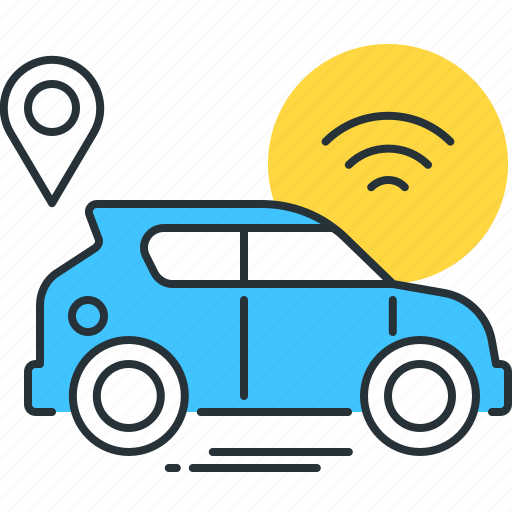

Smart Van
The open source project for building your own intelligent van.As the official Smart Van's web site here you can find all project's resources like docs, schemes, source code, assets, tutorials, etc... and create your own SmartVan.
With Smart Van, you can connect a van that is tailored to your specific needs and requirements. Whether you want a van for camping, road trips, or work, Smart Van can help you make it happen.

Smart Van is open source, which means that anyone can contribute to its development. This makes Smart Van a powerful and versatile platform for building intelligent vans.
If you are interested in building your own intelligent van, then Smart Van is the perfect starting-point for you. Visit the Smart Van's DOCS today to learn more and to get started.
What is it?
The Smart Van is an DIY solution to smartize campers and vans easily and safely.

What does "smartize" mean?In the IT world, it means connecting a physical object to an application or the web so that it can be monitored and controlled remotely.
What does it mean to smartize a camper?It means connecting the camper's resources (energy, water, location, etc.) and services (lights, fans, awning, fridge, etc.) to a smart system that can monitor and control them.
Each camper is unique in terms of its resources and services. This is why we started with the most common resources and services, and we will add more "exotic" features in the future.
You can find a list of the current features on the SmartVan FEATURES page. These lists are defined at the beginning of the development of each release so that they can be integrated and updated according to the needs of the community.
The SmartVanBox
The Smart Van Box is a small and powerful computer that is designed to be installed in a van. It is the brain of the Smart Van system, and it connects to the van's resources and services to make them smart.

SmartVan Mobile App
The Smart Van App is a mobile application that allows you to monitor and control your van from anywhere in the world. It connects to the SmartVanBox over the internet, so you can check on your van even when you are not nearby.
Getting Started
1. Get the Hardware
The quickest way to get started is to build your own device. Nothing scary, if you've ever played with LEGO, then you'll have no trouble assembling the Smart Van Box. Check the shopping list, order the necessary components, and put everything together.
Go to the page of the latest available Smart Van Box, or visit the Hardware section where you can find other models or upload your own.
2. Setup everything
Once the hardware is ready, you can install the firmware and configure the services.
You can directly downloads images to flash on the IoT devices, or get and compile the source code directly from the Git repositories. Once all firmware has been loaded on the devices, you can mount the hardware in your camper. Follow the instructions for the chosen hardware.
Finally, power up the box.
Now, your Smart Van box is now active and broadcasting its own WiFi network.
3. Connect the Smart Phone
Get the mobile app from the app stores (not yet available), download it or compile from his sources.
Then, lunch the installed app and follow these steps:
- Tap on "Setup new Van"
- Login or register to the IoT platform
- Wait for Smart Van box WiFi scanning
- Connect to the Smart Box WiFi
- Change the Smart Box 's WiFi default password
🎉 Compliments! Now you can access to the Smart Van box from your smartphone! 🎉
What's next?
Do it, play with it, and share your experience. If you need help, ask for it on our official Facebook Page. You can also use the page to share your projects and ideas.

Since this is an open project, don't be afraid to offer your ideas, whether they're suggestions or criticisms. With so many different fields and knowledge required, no one is an expert in everything, so it's easy to collaborate on even small things. Let's start on the COLLABORATE page to know how to submit an idea or suggestion.